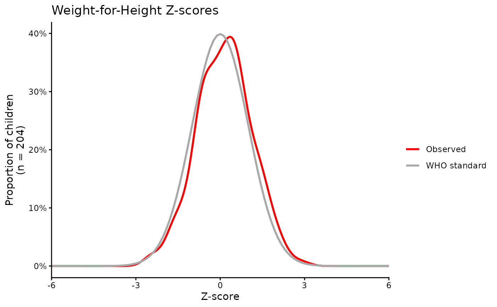
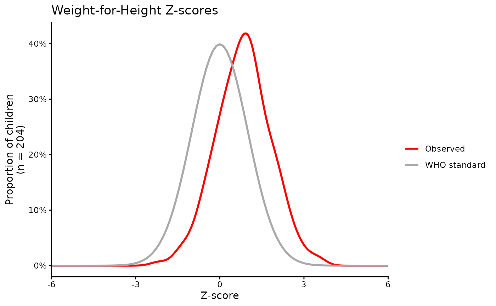
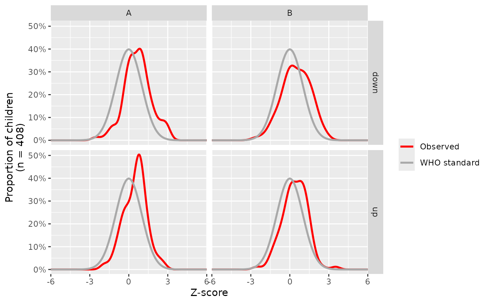

Create a curve comparing observed Z-scores to the WHO standard.
zcurve(x, zscore)a ggplot2 object that is customisable via the ggplot2 package.
library("ggplot2")
set.seed(9)
dat <- data.frame(observed = rnorm(204) + runif(1),
skewed = rnorm(204) + runif(1, 0.5)
) # slightly skewed
zcurve(dat, observed) +
labs(title = "Weight-for-Height Z-scores") +
theme_classic()
#> Warning: All aesthetics have length 1, but the data has 204 rows.
#> ℹ Please consider using `annotate()` or provide this layer with data containing
#> a single row.

zcurve(dat, skewed) +
labs(title = "Weight-for-Height Z-scores") +
theme_classic()
#> Warning: All aesthetics have length 1, but the data has 204 rows.
#> ℹ Please consider using `annotate()` or provide this layer with data containing
#> a single row.

# Including different groups to facet
dat <- data.frame(
observed = c(rnorm(204) + runif(1), rnorm(204) + runif(1, 0.5)),
groups = rep(c("A", "B"), each = 204),
treat = sample(c('up', 'down'), 408, replace = TRUE)
)
zcurve(dat, observed) +
facet_grid(treat~groups)
#> Warning: All aesthetics have length 1, but the data has 408 rows.
#> ℹ Please consider using `annotate()` or provide this layer with data containing
#> a single row.
